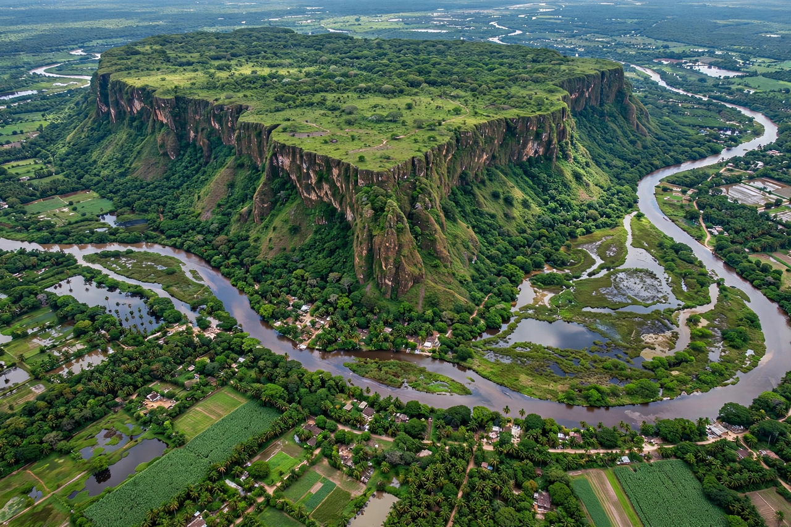

| San Lorenzo Tenochtitlán | |
 The San Lorenzo plateau, Veracruz | |
| Location | Veracruz, Mexico |
|---|---|
| Culture | Olmec |
| Occupied | c. 1500–400 BC; peak c. 1200–900 BC |
| Known for | Ten colossal heads; earliest Olmec capital |
San Lorenzo Tenochtitlán is an archaeological zone in the Mexican state of Veracruz comprising three related Olmec sites — San Lorenzo, Tenochtitlán, and Potrero Nuevo — along the Coatzacoalcos River. San Lorenzo itself, built on a plateau rising some 50 metres above the surrounding floodplain, was the earliest Olmec civic-ceremonial centre and probably the largest city in Mesoamerica between about 1200 and 900 BC.
The plateau top was extensively modified by its inhabitants, with elite residences, workshops, and dozens of stone monuments arranged in formal patterns. Artificial ravines and an extensive system of stone-lined drains — hundreds of metres of U-shaped basalt troughs — channelled water across the site. Causeways of basalt columns and large stone-lined ponds have been interpreted in terms of water control and ritual.
San Lorenzo has yielded ten of the seventeen known Olmec colossal heads, more than any other site, along with massive thrones and other sculptures — many of them deliberately mutilated and buried around 900 BC, at the time of the centre's decline. The monuments were carved from basalt transported from the Tuxtla Mountains, roughly 60–80 km away.
Around 900 BC the site's population fell sharply and its monuments were defaced; the causes — internal revolt, invasion, or environmental change such as the silting of rivers — remain debated. Political primacy in the Olmec world passed to La Venta.